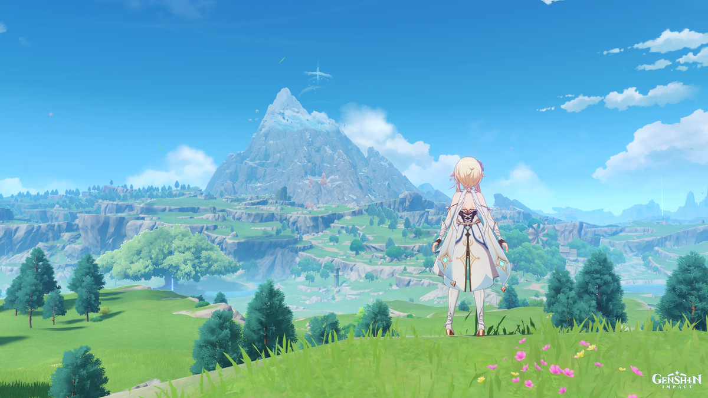
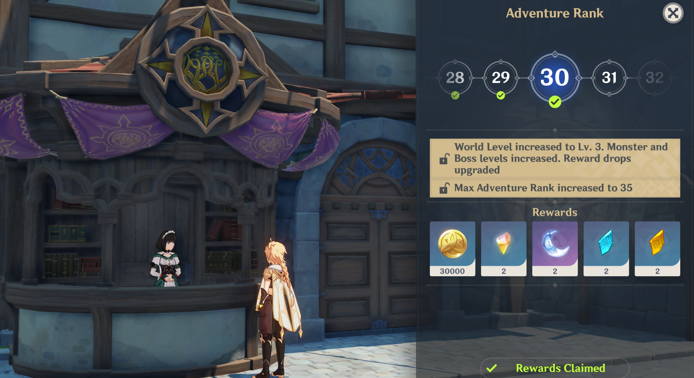
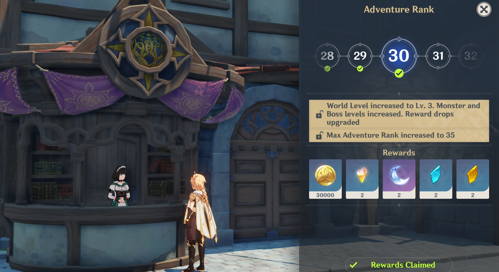
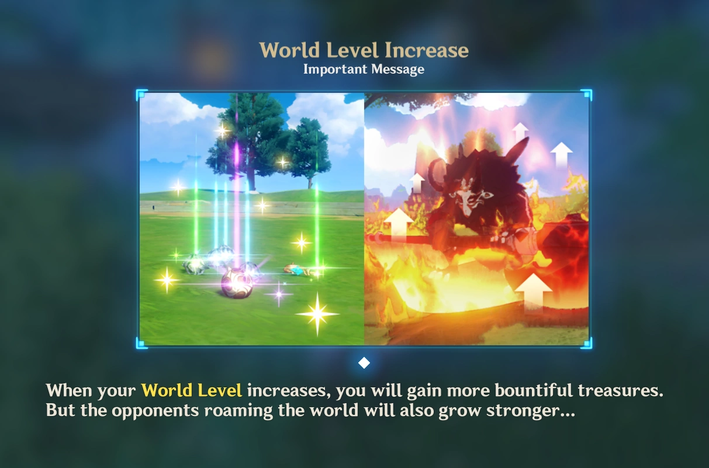
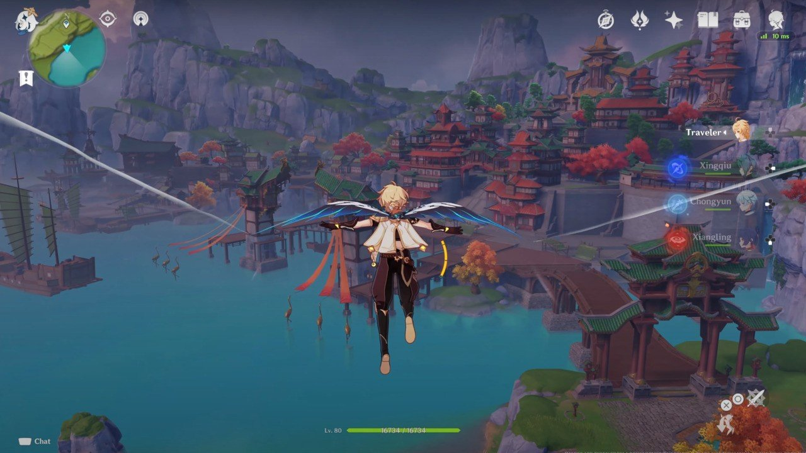
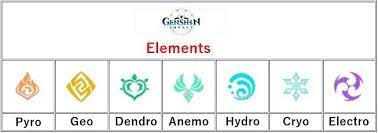
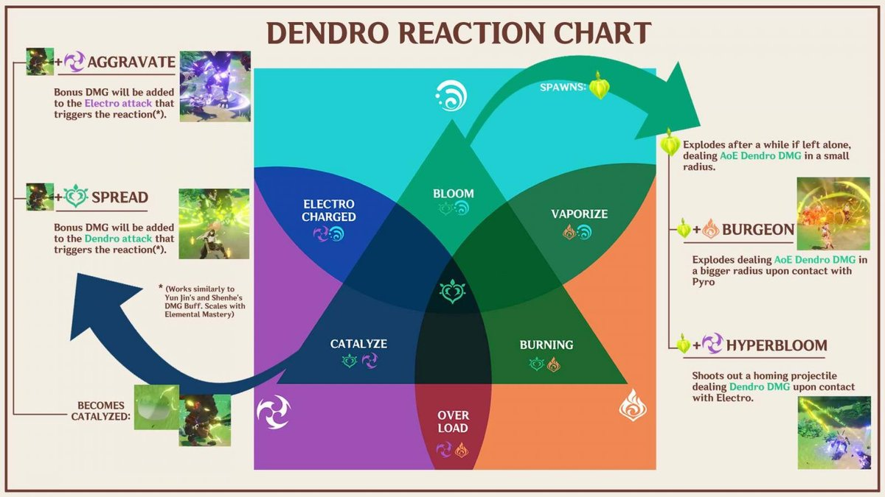
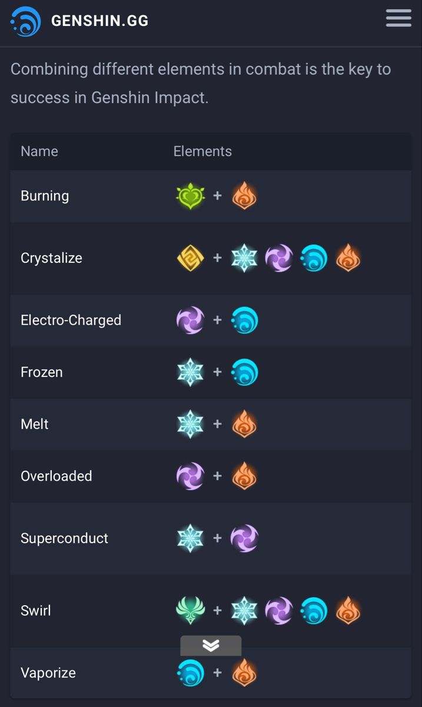
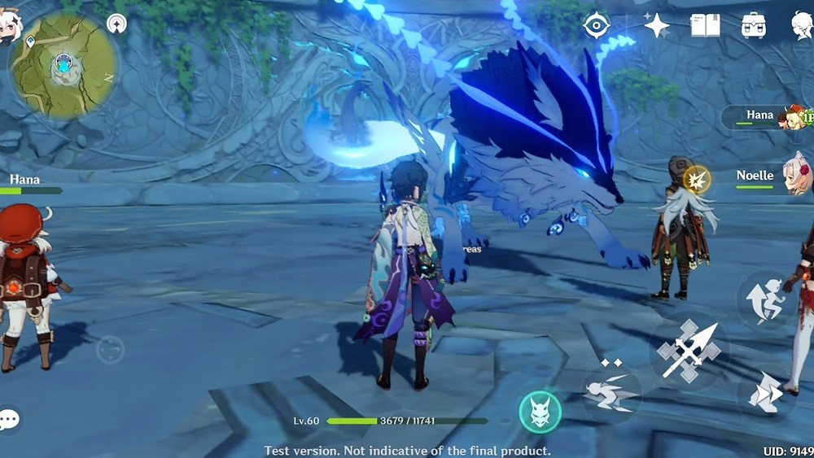
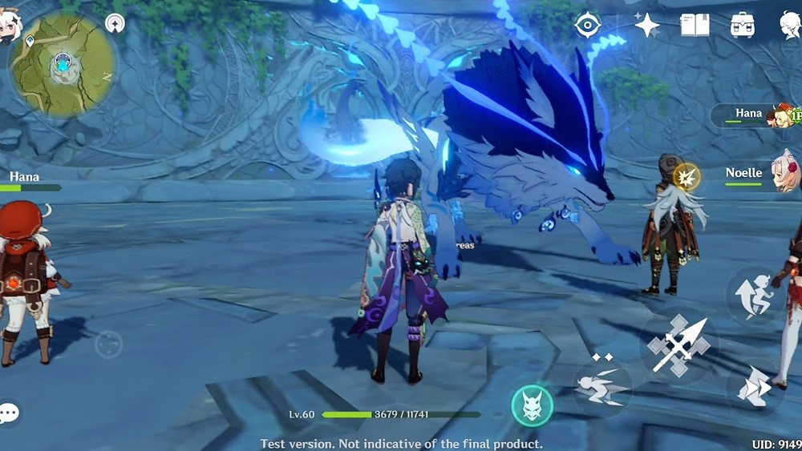

About page
.jpg)

-
-
-
-
Game Play

 

Genshin Impact is an open-world, action role-playing game that allows the
player to control one of four interchangeable characters in a party.
Switching between characters can be done quickly during combat, allowing
the player to use several different combinations of skills and attacks.
Characters may have their strengths enhanced in various ways, such as
increasing a character's level and improving artifacts and the weapons
that the character equips. In addition to exploration, the player can
attempt various challenges for rewards. Scattered across Teyvat are bosses
and challenges that reward highly valuable resources, such as Stormterror
and the Electro Hypostasis, but claiming them uses up a currency called
resin, which slowly regenerates over time. Completing these challenges
grants the player progress towards increasing their Adventure Rank, which
in turn unlocks new quests, challenges, and raises the World Level. The
World Level is a measure of how strong the enemies within the world are
and the rarity of rewards that defeating them gives.


The player can control their character and perform actions
such as running, climbing, swimming, and gliding, limited by stamina. Some
characters possess abilities that can alter the environment, such as
freezing water, to create an ice path that can aid the player in
traversing terrain. Many teleportation nodes exist throughout the world
that players can warp to as a form of fast travel; among these are
landmarks known as Statues of The Seven that can heal and revive
characters, and provide benefits such as increasing player stamina. Items
such as food and ore may be procured from the open world, while enemies
and treasure chests drop other types of resources that may be used in
enhancing a character's strength. Players can obtain food from hunting
animals, gathering fruit and vegetables, or purchasing them from a store.
Furthermore, there are special battle instances called Domains that reward
materials that increase character and weapon strength.] Ingredients that
can be cooked into meals that regenerate characters' health or boost
various stats. Players can also procure ore that can be refined and then
used to create weapons or enhance their strength.



Each character has two unique combat skills: an Elemental Skill and an
Elemental Burst. The Elemental Skill can be used at any time except for
the cooldown period immediately after use. In contrast, the Elemental
Burst has anenergy cost, requiring the user to amass sufficient elemental
energy by defeating enemies or inflicting elemental status effects.
Characters have control over one of seven natural elements: Cryo, Dendro,
Pyro, Hydro, Anemo, Electro and Geo; which correspond to ice, plants,
fire, water, wind, electricity, and rock, respectively. These elements can
interact in different ways; for example, if a Hydro attack hits a target,
the enemy will be inflicted with the "Wet" status effect, and if they are
hit with a Cryo attack, it will inflict "Cryo". These two status effects
combine into the "Frozen" status effect, temporarily preventing the target
from performing any actions or until the player deals enough physical
damage to the enemy. Switching between characters during combat and
executing those skills allows those elemental interactions to take place.
Certain elemental abilities may be required to solve puzzles within the
overworld.
  A multiplayer
mode is available in the form of co-op. Up to 4 players can play together
in the overworld and join Domains. Player matching can either be done by
requesting to connect with another player. If the player wishes to clear a
Domain with other players, they will be automatically matched up with
others looking to tackle the same objective. The game features
cross-platform play, so players on any platform can play with each other.
 A multiplayer
mode is available in the form of co-op. Up to 4 players can play together
in the overworld and join Domains. Player matching can either be done by
requesting to connect with another player. If the player wishes to clear a
Domain with other players, they will be automatically matched up with
others looking to tackle the same objective. The game features
cross-platform play, so players on any platform can play with each other.
By completing quests to advance the story, the player can initially unlock
four additional playable characters, and more characters can be obtained
via a gacha mechanic and in-game events. Several premium in-game
currencies, obtainable through in-app purchases and playing the game, can
be used to obtain characters and weapons through the gacha system. A pity
system guarantees that the player will receive rare items after a set
number of draws.
Story
Setting and characters
Main article: List of Genshin Impact characters
Genshin Impact takes place in the world of Teyvat, composed of the seven
major nations of Mondstadt, Liyue, Inazuma, Sumeru, Fontaine, Natlan, and
Snezhnaya; each nation is ruled by a different god. The mysterious
floating island of Celestia is allegedly home to gods and mortals who have
ascended to godhood through great, heroic feats. Underground lie the ruins
of the nation of Khaenri'ah which was destroyed by gods 500 years before
the events of the game. Unlike the seven major nations, Khaenri'ah was not
ruled over by a god. The player character, the Traveler (male or female,
depending on the player's choice), is separated from their twin and
becomes trapped in Teyvat. They are joined by a companion, Paimon, as they
journey through Teyvat in search of their lost sibling. Although players
can choose the name they want to be referred by, the Traveler's sibling
refers to the Traveler by either Aether or Lumine if the Traveler is male
or female, respectively.
Each nation is associated with and worships one of The Seven, a group of
gods known as the "Archons", who each preside over one of the seven
nations. Each member of The Seven is tied to one of the game's elements,
and is also reflected in their nation's aspect. Barbatos, Rex Lapis, the
Raiden Shogun, Kusanali, and the Tsaritsa are the Archons of Mondstadt,
Liyue, Inazuma, Sumeru, and Snezhnaya, respectively. However, the god who
is the Archon may change over time as Archons pass away. If a person's
ambitions are great enough, they may be granted a Vision—magical gemstones
that give their bearers the ability to command an element and the
potential to ascend to godhood and reside in Celestia.
Mondstadt, the city of freedom, worships the Anemo Archon Barbatos and
sits on an island in the middle of a lake. The city is protected by the
Knights of Favonius, who are tasked with protecting Mondstadt and its
citizens. To the southwest, Liyue worships the Geo Archon Rex Lapis (also
known as Morax) and is the largest market harbor in Teyvat. The harbor
city is presided over by the Liyue Qixing, a group of business leaders.
There are also ancient guardians known as Adepti, a class of magical
beings that includes Rex Lapis himself. East of Liyue lies Sumeru, an
nation composed of both rain-forests and desert. Nominally ruled over by
the Dendro Archon, Lesser Lord Kusanali, Sumeru is largely controlled by
the powerful Akademiya, which is one of Teyvat's most prestigious research
institutes. However, instead of celebrating their current god, the sages
who lead the Akademiya focus much of their attention on venerating the
former Dendro Archon, Rukkhadevata.
Across the sea to the southeast lies the isolationist island nation of
Inazuma, overseen by the authoritarian regime of the Raiden Shogun (also
known as Baal) and three governmental bodies that together make up the
Tri-Commission: the Tenryou Commission, Kanjou Commission, and Yashiro
Commission; overseeing military and executive affairs, finances and
foreign affairs, and ceremonial affairs respectively. Snezhnaya, ruled by
the Cryo Archon known as the Tsaritsa, sends out diplomats called the
Fatui, who maintain a friendly appearance while using more underhanded
methods secretly. The Fatui are also led by the Eleven Fatui Harbingers,
individuals given extraordinary powers and executive authority by the
Tsaritsa. In addition to the Fatui, another major antagonistic faction in
the game is the Abyss Order, a legion of monsters that declares themselves
to be enemies to all of humanity and the nations of Teyvat. They are led
by the "Prince" or "Princess", the lost twin of the Traveler.
Each nation takes inspiration from real-life nations and cultures:
"Mondstadt" is German for "moon city", and takes inspiration from medieval
Western Germany; Liyue (璃月, Jade Moon) is based on China; Inazuma (稲妻,
lightning) is based on Edo Japan; Sumeru, named after Mount Meru, takes
inspiration from North Africa, West and South Asia; Fontaine, (French for
"Fountain") is based on France; Natlan is based on Indigenous America,
Latin America and West African Cultures; and Snezhnaya (Снежная, snowy)
takes inspiration from Russia.
Plot
A pair of twins who travel across different worlds arrive in the world of
Teyvat. As they attempt to leave it, their path is blocked off by a god
who claims herself as the "Sustainer of Heavenly Principles", and
separates them away from each other. One of the twins, referred to as the
"Traveler", awakens and find themselves stranded and their powers sealed.
Two months later, the Traveler meets Paimon, who proposes to aid and guide
the them throughout the seven nations of Teyvat to search for the other
twin. Paimon suggests that they consult with each nation's ruling archons,
deities of elemental power, for assistance.
They first arrive to the nation of Mondstadt, whose archon Barbatos is the
God of Anemo. Upon arriving at the city of Mondstadt, they find that the
city is being terrorized by a dragon called Stormterror. With the help of
a bard named Venti, they realized that the dragon is being manipulated by
the Abyss Order, a legion of mysterious creatures wreaking havoc
throughout Teyvat. Venti reveals himself to be a manifestation of Barbatos
and frees the dragon of its influence, informing it of his desire for all
of Mondstadt to enjoy all freedom. After solving the crisis, they are
ambushed by La Signora, a Fatui Harbinger diplomat from nation of
Snezhnaya, who steals Venti's Gnosis (a symbol of an Archon's power) in
the name of her archon, the Tsaritsa. Upon recovering, Venti has no
answers to give about the Traveler's twin but advises them to visit the
neighboring nation of Liyue to meet Rex Lapis, a manifestation of Morax,
the Geo Archon.
The Traveler and Paimon go to Liyue Harbor to visit Rex Lapis, only for
him to descend lifeless from the skies. They are assisted by the mortician
Zhongli and the Fatui Harbinger Childe, in performing a rite of farewell
for the archon. Childe's ulterior motive—to find Rex Lapis's body and
steal his Gnosis, is intercepted by the Traveler. To retaliate, Childe
unleashes an ancient fallen god to terrorize the nation. Its inhabitants,
the adepti and humans join forces to successfully defend Liyue. The
Traveler and Childe later find out that Zhongli is the true vessel for
Morax and has already exchanged his Gnosis with La Signora in an
undisclosed contract. Zhongli retires as the ruling archon of Liyue,
assuring the Traveler that the nation will be safe in the hands of the
Qixing and Adepti. When the Traveler asks about their twin, Zhongli states
that he has knowledge, but due to a contract, he cannot divulge any
details.
The Traveler and Paimon return to Mondstadt and meets a stranger named
Dainsleif, who assists them in investigating an insidious attempt of the
Abyss Order to artificially create a deity capable of overthrowing the
sky-hovering realm of Celestia, which rules all over Teyvat. In their
journey, Dainsleif divulges information about the fallen kingdom of
Khaenri'ah and its connection to the Abyss Order. Their success in
thwarting the attempt is interrupted by the arrival of Traveler's sibling,
who refuses to reunite with the Traveler and is revealed as the leader of
the Abyss Order. Dainsleif chases after them, leaving the Traveler to
decide to continue on their original mission.
The Traveler and Paimon are informed that the island nation of Inazuma is
under an isolationist border policy and that the visions of some of its
inhabitants are being confiscated by order of the Raiden Shogun, the
vessel of the Electro Archon Baal. They stealthily arrive at the nation
via boat, hoping for an audience with her, but their interruption of the
Shogun's vision confiscation invokes her wrath instead. Barely escaping,
they joins the insurgents and learns that the harmful decrees have been
devised by the Fatui. Powerless in confronting the Fatui Harbinger No. 6,
going by the name of Scaramouche, the Traveler is saved by the Raiden
Shogun's shrine maiden Yae Miko, who trades in the Electro Archon's Gnosis
for ransom. Miko devises a plan for the Traveler to confront the Raiden
Shogun and her real master—Ei, the vessel of Baal's twin sister Beelzebul.
Ei reveals that she and Baal once ruled Inazuma together as one before the
latter's death. Grieving for her loss, she secluded herself and her
country to preserve her ideals of eternity. Conceding defeat, she
abolishes the vision hunt decree and reconsiders her understanding of an
eternal nation. Despite their victories, Miko is unable to provide useful
information to the Traveler about their sibling but suggests to visit the
Dendro Archon, Lesser Lord Kusanali.
The Traveler and Paimon returns to Liyue to explore the Chasm region and
reunites with Dainsleif, who is unsuccessful in chasing after their
sibling. Seeing a vision of their sibling attempting to revive the kingdom
of Khaenri'ah, they are torn between helping their sibling and defeating
the Abyss Order. Dainsleif declares that the Traveler must choose between
the world of Teyvat or their twin before departing.
The Traveler and Paimon journey to Sumeru in search of Lesser Lord
Kusanali, but are unable to due to the Akademiya trapping her in her home
and actively suppressing information about Kusanali. The Traveler is able
to meet her vessel, Nahida, within a dream, and discover that the
Akademiya's sages, in partnership with the Fatui Harbinger Il Dottore, are
trying to replace Kusanali by turning Scaramouche into a god with the
power of the Electro Gnosis. After the Traveler and Nahida fight
Scaramouche and subdue him, Nahida seizes the Electro Gnosis and uses its
power to visit the last memory of Rukkhadevata, who reveals that she
created Kusanali as a means to erase herself from the world's collective
memory to erase the spread of knowledge that had polluted the world. Upon
doing so, everyone forgets about Rukkadevata except the Traveler, who is
unaffected due to not being from Teyvat. Il Dottore later blacks the
Traveler out to force Nahida to give up the Electro and Dendro Gnoses.
Days later, before the Traveler heads for Fontaine, Nahida tells them that
they are the fourth of the "Descenders", the Fatui's label for those who
come from outside Teyvat, but their sibling is not counted among them.
Security concerns
The game has been criticized for initially lacking security features
ubiquitous on other sites, like two-factor authentication. On October 19,
2020, a vulnerable security flaw was discovered that exposed the phone
number linked to a player's account during the password recovery attempt
on the miHoYo website. However, the issue was not rectified until November
9, 2020. miHoYo has issued notices following the wake of security
exposures, informing players to be careful about sharing account details
and to bind their account to their email address and phone number. In May
2021, two-factor authentication was added whenever the player signs in on
a new device.
Similar to other online games, the game uses an anti-cheat system
implemented by a kernel driver. The driver is used to prevent other
programs from performing code injection, memory inspection, and other
process manipulation. Originally, the anti-cheat driver would remain
loaded after the game exited. This issue was rectified shortly after the
game's release, and now unloads as soon as the game exits.
Accolades
Apple awarded Genshin Impact with "iPhone Game of the Year" in the App
Store Best of 2020. The game also won Google Play's "Best Game of 2020".
| Year |
Award |
Category |
Result |
| 2020 |
TapTap Game Awards |
Game of the Year |
Won |
| 2020 |
Golden Joystick Awards |
Ultimate Game of the Year |
Nominated |
| 2020 |
Google Play User's Choice |
Best Game |
Nominated |
| 2020 |
The Game Awards 2020 |
Best Mobile Game |
Nominated |
| 2020 |
The Game Awards 2020 |
Best Role Playing Game |
Nominated |
| 2021 |
Apple Design Awards |
Visual and Graphics |
Won |
| 2021 |
The Game Awards 2021 |
Best Mobile Game |
Won |
| 2021 |
The Game Awards 2021 |
Best Ongoing Game |
Nominated |
| 2022 |
The Game Awards 2022 |
Best Ongoing Game |
Nominated |
| 2022 |
The Game Awards 2022 |
Best Mobile Game |
Nominated |
| 2022 |
The Game Awards 2022 |
Player's Voice |
Won |